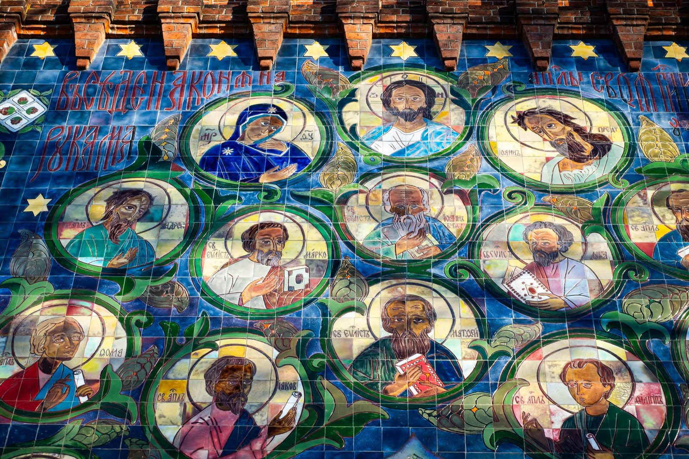
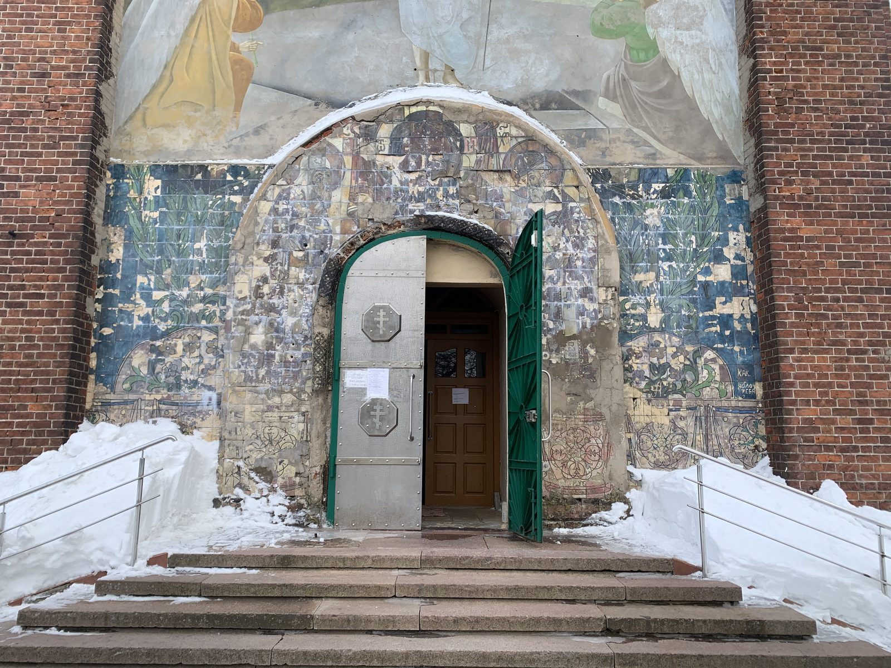
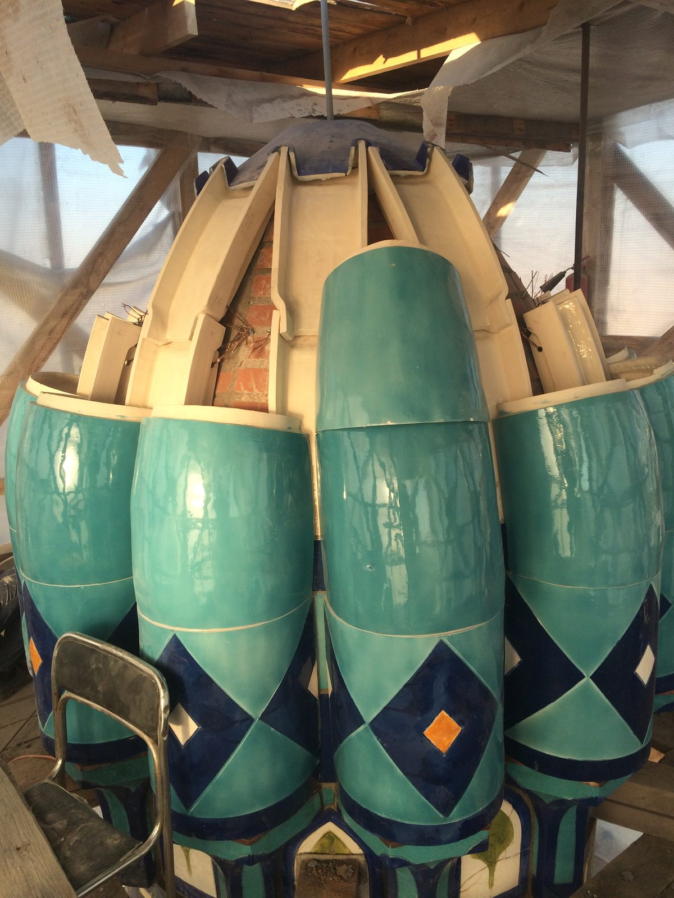

«Паллада» выполняет весь комплекс работ: от обследования объекта и разработки методики до реставрации, воссоздания утраченных элементов и монтажа.
«Паллада» реставрирует и воссоздаёт фасадную, интерьерную и печную керамику на объектах культурного наследия. Мы работаем с майоликовыми панно, изразцами, облицовочной плиткой, фасадными деталями, печами и каминами.
Цель реставрации
Цель работы — сохранить подлинную керамику и восстановить целостность архитектурного убранства. При этом важно вернуть объекту не только форму и цвет. Фасадная деталь должна выдерживать влагу, мороз, перепады температуры и другие нагрузки, а печной изразец — нагрев и последующее охлаждение.
Методику выбирают с учётом состояния материала и условий, в которых он будет находиться после реставрации. Решение, подходящее для музейного предмета, не всегда можно применять к детали, которую необходимо вернуть на фасад или включить в действующую печь.
Обследование и исследование подлинника
Работа начинается с обследования объекта. Специалисты фиксируют расположение и состояние элементов, характер повреждений, размеры, профиль, рельеф, цвет и особенности поверхности. Отдельно изучают основание, швы, крепления и поздние ремонтные вмешательства.
Причиной разрушения может быть не только состояние самой керамики. На неё влияют протечки, неисправный водоотвод, влага в кладке, коррозия металлических креплений, несовместимые ремонтные материалы и ошибки предыдущего монтажа. Если причина не установлена и не устранена, локальная реставрация даст только временный результат.
Натурное обследование дополняют архивными фотографиями, чертежами, авторскими эскизами и сведениями об историческом производстве. При необходимости проводят лабораторные исследования керамической массы, глазурей и пигментов. Это помогает понять, из чего и каким способом была изготовлена деталь, а затем обоснованно выбрать методику реставрации или воссоздания.
Реставрация сохранившихся элементов
Сохранившуюся керамику расчищают, укрепляют и реставрируют. В зависимости от состояния объекта работы могут включать удаление поздних загрязнений и покрытий, укрепление черепка и глазурного слоя, инъектирование, соединение фрагментов, восполнение небольших утрат и тонирование.
Состав операций определяется отдельно для каждого объекта. Важно сохранить максимум подлинного материала и не скрыть особенности его изготовления и бытования.
Если историческая керамика продолжает разрушаться и не может безопасно оставаться на фасаде, рассматривается возможность её музеефикации. Подлинные детали сохраняют в контролируемых условиях и используют как источник для точного воссоздания элементов, устанавливаемых на объекте. Такое решение сохраняет и сам исторический материал, и архитектурную композицию здания.
Воссоздание утраченной керамики
Источниками для воссоздания служат подлинные фрагменты, архивные изображения, чертежи, обмеры и исторические аналоги. По ним определяют размеры, профиль, рисунок рельефа, характер ручной обработки и цветовое решение.
Новая деталь должна соответствовать историческому образцу по материалу и эксплуатационным свойствам. Поэтому перед изготовлением основной партии выполняют серии технологических проб и контрольных образцов.
Исторические и современные технологии
Если внешний вид и свойства исторической керамики связаны с конкретной технологией, специалисты «Паллады» воспроизводят сам способ изготовления. Так ведётся работа со сложными глазурями, восстановительными обжигами, ручной росписью, рельефной майоликой и метлахской плиткой с глубоко окрашенным верхним слоем.
Основные операции выполняются вручную: создание моделей и форм, формование, подгонка, обработка поверхности, глазурование и роспись. Современные методы применяются там, где они повышают точность и не противоречат характеру подлинника. Например, 3D-сканирование помогает зафиксировать геометрию сохранившейся детали или получить данные с исторического аналога. Выбор между цифровой и ручной моделью зависит от источников и задачи конкретного проекта.
Производство и монтаж
После утверждения контрольных образцов начинается изготовление деталей. В процессе производства контролируют размеры, геометрию, состояние поверхности и результат каждого обжига. Для сложных композиций проводят предварительную сборку в мастерской, проверяют стыки, последовательность установки и соответствие проектным размерам.
При разработке монтажного решения учитывают состояние основания, конструкцию креплений, температурные перемещения и отвод воды. Новые элементы должны точно войти в историческую кладку и работать вместе с сохранившимися деталями.
Совмещение реставрационных мастерских и собственного производства даёт возможность сопровождать проект от изучения подлинника до установки готовой керамики на объекте. Данные обследования, результаты технологических проб и требования к монтажу остаются внутри одной команды.
Состав работ
- обследование и фотофиксация;
- архивные и натурные исследования;
- лабораторные исследования материалов при необходимости;
- разработка методики и проектной документации;
- демонтаж и маркировка элементов;
- расчистка, укрепление и реставрация подлинной керамики;
- создание моделей, форм и оснастки;
- подбор керамических масс, глазурей и режимов обжига;
- изготовление утраченных элементов;
- контрольная сборка;
- монтаж и авторский надзор.
От подлинника к восполнению

